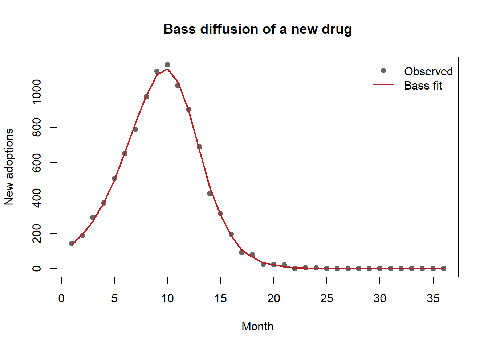

flowchart LR F[Pharma firm] -->|detailing, samples,<br/>journal ads| MD[Physician<br/>expert agent] F -->|DTC advertising| PT[Patient<br/>principal/consumer] PT -->|requests drug| MD MD -->|writes Rx| PH[Pharmacy] PH --> PT PAY[Payer / PBM] -.->|reimburses| PH REG[FDA / regulator] -.->|constrains claims| F classDef firm fill:#e8eef7,stroke:#33415c; classDef reg fill:#f7ece8,stroke:#5c3a33; class F firm class REG,PAY reg
21 Healthcare and Pharmaceutical Marketing
Healthcare is the largest sector of most advanced economies, and the marketing of its products differs from consumer goods in a way that organizes this entire chapter: the person who consumes a prescription drug is usually not the person who chooses it. A physician writes the prescription; a patient swallows the pill; a payer reimburses the cost; a regulator decides what may be claimed about the molecule at all. Marketing therefore acts on a chain of agents with divergent information and incentives, and the central empirical problems—who responds to detailing, whether direct-to-consumer advertising expands the category or merely reallocates it, how a new therapy diffuses through a professional network, what prescribers do when the evidence itself disagrees—are problems of separating persuasion from selection in exactly this multi-agent setting.
This chapter treats pharmaceutical and healthcare marketing as a set of measurement and identification problems rather than a catalog of tactics. We begin with the institutional structure that constrains every instrument (the prescribing agency relationship, regulation, and the data that researchers actually observe). We then take the four canonical levers in turn: physician detailing (personal selling to prescribers), direct-to-consumer advertising (DTCA), the diffusion of medical innovations through professional networks, and physician response to conflicting information. For each, we lead with the economic intuition, state a formal model with its estimator, and—critically—name what breaks identification, because the recurring threat in this literature is that firms target their effort exactly where response would have been high anyway. We close with the welfare and policy questions that make the sector distinctive, and with reproducible code for a detailing-response model and a Bass diffusion fit.
By the end the reader should be able to specify a prescription-response model that separates a detailing effect from targeting endogeneity, set up a DTCA design that distinguishes category expansion from business stealing, fit and interpret a diffusion model on adoption data, and reason about how a Bayesian prescriber should update beliefs when two trials contradict each other.
21.1 The Prescribing Agency Relationship
The defining feature of the prescription market is a double agency. The patient delegates the choice of therapy to a physician who is better informed, and the physician in turn prescribes against a budget that a third party (an insurer, a government program, or a pharmacy-benefit manager) ultimately pays. The physician is thus an expert agent who neither bears the full cost nor consumes the product. This structure has three consequences that recur throughout the chapter.
First, the buyer’s price sensitivity is muted and indirect. Because the prescriber does not pay and the patient pays only a copay, demand responds less to list price than in ordinary markets and more to clinical attributes, habit, and information—the very things marketing supplies. Pharmaceutical demand is, to a first approximation, an information problem.
Second, firms market to two audiences with different instruments. “Push” marketing—detailing (sales-representative visits), free samples, sponsored education, and journal advertising—targets the prescriber. “Pull” marketing—direct-to-consumer advertising—targets the patient, who then asks the prescriber for the drug. The two are complements as often as substitutes, and a recurring empirical question is how they interact (Narayanan and Manchanda 2009).
A prescription drug is a credence good chosen by an expert agent on behalf of a principal who consumes it, and paid for by a third party. Marketing in this market is the management of information flows to the agent and, where permitted, to the principal—under a regulatory ceiling on what may be claimed.
Third, the product is a credence good under heavy regulation. Patients cannot verify efficacy even after consumption (was it the drug or the disease course?), so claims are policed. In the United States the Food and Drug Administration (FDA) regulates promotional claims, requires “fair balance” between benefit and risk, and since its 1997 guidance has permitted broadcast DTCA with abbreviated risk disclosure—a regulatory regime that makes the U.S. and New Zealand the only major markets allowing product-claim DTCA. Most other jurisdictions ban it, which is why much of the credible DTCA evidence exploits this regulatory variation. Throughout, the reader should keep the regulatory boundary in view: it is both a constraint on firms and a source of identifying variation for researchers. Figure 21.1 sketches the agency chain and the two marketing routes, push and pull, that act on it.
21.1.1 What the Researcher Observes
The empirical literature is built largely on a small number of data structures, and the available data dictate the feasible identification strategy. Three are central. Physician-level panels (e.g., audits that record, for a sample of prescribers, their monthly new prescriptions and the detailing calls and samples they received) support individual-level response models and are the workhorse for detailing research (Manchanda, Ansari, and Gupta 1999; Manchanda, Rossi, and Chintagunta 2004). Market-level time series (national or regional sales against aggregate advertising and detailing spend) support category-versus-share questions and aggregate diffusion fits but cannot, on their own, separate persuasion from heterogeneity. Adoption records—the dates at which each physician first prescribes a new molecule, sometimes with the social ties among them—support diffusion and contagion models (Bulte and Lilien 2001; Iyengar, Ansari, and Gupta 2003). The selection problem differs by structure: in physician panels the threat is that calls are targeted; in market series it is that advertising is timed to demand; in adoption data it is that connected physicians are also similar.
21.2 Theoretical Foundations
The agency structure above explains the institutions of the prescription market; a parallel set of behavioral theories explains the individual decisions (of patients seeking care, of prescribers changing practice) that marketing tries to move. Five strands recur throughout the chapter.
The health belief model holds that protective health action follows from a person’s perceived susceptibility to a condition, the perceived severity of its consequences, the perceived benefits of acting, and the perceived barriers to doing so, often triggered by a cue to action. It frames the patient side of direct-to-consumer advertising (Chapter 21, “Direct-to-Consumer Advertising”): an advertisement that raises perceived susceptibility or lowers a perceived barrier is precisely a cue that converts latent need into a request to prescribe.
The theory of reasoned action and its extension, the theory of planned behavior, hold that behavior follows intention, which is in turn determined by attitudes, subjective norms, and, in the planned-behavior extension, perceived behavioral control (Ajzen 1991; Sheppard, Hartwick, and Warshaw 1988). This intention-to-behavior chain is the dominant account of health compliance and adoption, and it underwrites the survey-based predictive models that the prescription literature deploys.
Protection-motivation theory sharpens the fear-appeal logic by separating two appraisals: a threat appraisal (severity and vulnerability) and a coping appraisal (response efficacy and self-efficacy). Protection motivation rises only when both are favorable, which explains why risk-disclosure messaging that frightens without supplying an efficacious response can backfire, a caution directly relevant to the fair-balance regime constraining DTCA.
The transtheoretical (stages-of-change) model describes behavior change as movement through ordered stages (precontemplation, contemplation, preparation, action, and maintenance) rather than a single switch. It implies that interventions must be stage-matched: a message effective for someone contemplating treatment is wasted on someone not yet aware of the problem, a segmentation logic that mirrors the heterogeneous-response findings for detailing (Chapter 21, “Physician Detailing”) and conflicting information.
Behavioral-economics nudges in health complete the set. Because prescribers and patients are boundedly rational, choice architecture (defaults, framing, and salience of the easy option) shifts health behavior without changing the underlying clinical incentives. The same reference-dependence and present-bias mechanisms developed for nudges and pricing recur here: framing a screening as a loss avoided rather than a gain forgone, or defaulting a formulary toward the preferred therapy, moves behavior at the margin where the health belief model locates its barriers.
21.3 Physician Detailing
Detailing is personal selling to physicians: a sales representative (“detail rep”) visits a prescriber, presents clinical information about a drug, leaves samples, and builds a relationship. It is the largest line in most pharmaceutical promotional budgets. The marketing-science question is deceptively simple—what is the incremental prescription return to a detailing call?—and the answer is hard for one reason: calls are not randomly assigned. Firms send representatives to high-volume, high-potential physicians, so a naive regression of prescriptions on detailing recovers the firm’s targeting rule compounded with any true response.
21.3.1 A Response Model and the Targeting Problem
Let \(y_{it}\) denote the number of new prescriptions physician \(i\) writes for the focal drug in period \(t\), and let \(d_{it}\) denote detailing calls received. A natural count model writes prescriptions as Poisson with a log-mean that responds to a stock of detailing goodwill,
\[ y_{it} \sim \text{Poisson}(\lambda_{it}), \qquad \log \lambda_{it} = \alpha_i + \beta\, g(D_{it}) + \mathbf{x}_{it}^{\top}\boldsymbol{\gamma}, \tag{21.1}\]
where \(\alpha_i\) is a physician-specific intercept (baseline prescribing propensity), \(\mathbf{x}_{it}\) collects controls, and \(g(D_{it})\) is a concave, saturating transform of the detailing stock
\[ D_{it} = (1-\delta)\,D_{i,t-1} + d_{it}, \tag{21.2}\]
with carryover \(1-\delta\). Concavity—e.g., \(g(D)=\log(1+D)\) or a power \(D^{\kappa}\) with \(\kappa<1\)—encodes the well-documented diminishing return to repeated calls and is what lets the model speak to the optimal call frequency rather than merely its sign (Manchanda, Ansari, and Gupta 1999). The object of interest is \(\beta>0\), the responsiveness of prescribing to accumulated detailing.
The identification threat is endogenous targeting: \(d_{it}\) is chosen by the firm as a function of expected prescribing, so \(\mathbb{E}[d_{it}\,\varepsilon_{it}] \neq 0\) even conditional on \(\mathbf{x}_{it}\), and ordinary estimation conflates response with selection. There are three lines of defense, in rough order of strength.
- Rich physician fixed effects. The intercept \(\alpha_i\) absorbs time-invariant potential, so \(\beta\) is identified from within-physician variation in calls. This removes the cross-sectional component of targeting (reps go to big prescribers) but not the dynamic component (reps go to physicians who are trending up).
- A joint model of the firm’s allocation. Manchanda, Ansari, and Gupta (1999) estimate the response model together with the firm’s detailing-allocation policy, treating calls as the outcome of an optimization that depends on the physician’s responsiveness. Modeling the selection mechanism explicitly is what purges the bias; a notable finding from this literature is that firms do not allocate calls optimally, leaving return on the table.
- Latent-trait segmentation. Manchanda, Rossi, and Chintagunta (2004) let responsiveness itself be heterogeneous and partly unobserved, recovering segments of physicians who differ in their detailing elasticity. The managerial payoff is a targeting rule keyed to responsiveness rather than to volume—two physicians with identical baseline prescribing can have very different marginal returns to a call.
A complementary mechanism operates through samples and learning. Free samples are simultaneously a price instrument (they lower the patient’s first-dose cost) and an information instrument (they let the physician observe the drug’s effect on her own patients). Dong, Manchanda, and Chintagunta (2009) model prescribing as Bayesian learning in which detailing supplies a signal and samples generate experience, so the two instruments have different decay and different long-run effects: persuasion fades while learned quality persists. Distinguishing an informative from a persuasive interpretation of detailing matters for welfare—informative detailing can be socially valuable even when it raises a single firm’s sales.
21.3.2 Heterogeneity, Saturation, and the Managerial Question
Two regularities are robust enough to plan around. First, response is concave and saturates: beyond a physician-specific threshold, additional calls add little, so the optimal policy spreads a fixed sales force across more physicians at lower frequency rather than pounding a few (Manchanda, Ansari, and Gupta 1999). Second, elasticities are heterogeneous, and the heterogeneity is not well predicted by prescribing volume alone (Manchanda, Rossi, and Chintagunta 2004). The practical implication is that the targeting problem and the response problem are the same problem: a firm cannot set an efficient call plan without an unbiased estimate of \(\beta\) for each segment, and it cannot obtain that estimate without modeling how it currently targets.
21.4 Direct-to-Consumer Advertising
Direct-to-consumer advertising (DTCA) addresses the patient rather than the prescriber. The patient, prompted by a television or print advertisement, raises the drug with a physician, who may or may not prescribe it. Because product-claim DTCA is legal in only a handful of countries, it is both economically large in the United States and a natural laboratory for studying advertising in a market where the buyer cannot transact directly.
The first-order policy question is the same one advertising raises everywhere (Chapter 13), sharpened by the agency structure: does DTCA expand the category (bring undiagnosed or untreated patients into therapy) or merely steal business (reallocate share among existing patients)? The welfare reading depends entirely on the answer. Category expansion that pulls undertreated patients into care can be health-improving; pure business stealing is a within-category transfer that consumes real resources. The empirical literature finds DTCA’s primary effect is typically on category/primary demand—the decision to seek treatment at all—rather than on brand choice, which detailing influences more (Narayanan and Manchanda 2009; Chintagunta, Gopinath, and Venkataraman 2010). DTCA and detailing are therefore not redundant: they act at different stages of the prescription funnel, and their returns interact.
21.4.1 Decomposing the Two Effects
A transparent way to separate the two effects is a nested-demand decomposition. Let category sales in market \(m\), period \(t\) be \(Q_{mt}\) and let brand \(j\)’s share be \(s_{jmt}\), so brand sales are \(q_{jmt}=s_{jmt}\,Q_{mt}\). In logs,
\[ \log q_{jmt} = \underbrace{\log Q_{mt}}_{\text{category (primary) demand}} + \underbrace{\log s_{jmt}}_{\text{brand (selective) demand}} . \tag{21.3}\]
Regressing \(\log Q_{mt}\) on the category’s total DTCA recovers the expansion effect; regressing \(\log s_{jmt}\) on brand \(j\)’s relative DTCA and detailing recovers the business-stealing effect. The empirical pattern is that DTCA loads on the first equation and detailing on the second (Narayanan and Manchanda 2009). Narayanan and Kalyanam (2015) push this further by recognizing that the marketing instruments are also informative: early in a drug’s life, advertising and detailing reduce consumer and physician uncertainty, so their measured effect changes over the life cycle—an informative role that dominates at launch and a persuasive/reminder role later. Treating marketing as carrying information, not just shifting tastes, is the through-line connecting the detailing, DTCA, and diffusion sections.
21.4.2 What Breaks Identification
Three threats recur, and a credible DTCA study must address each.
- Advertising endogeneity (timing). Firms raise DTCA when they expect demand to rise (a new indication, a seasonal peak), so \(\mathbb{E}[\text{adv}\cdot \varepsilon]\neq 0\) and OLS overstates the effect. Defenses include border/advertising discontinuities (television markets that spill across regions with different prescribing), instruments such as the cost of advertising or competitors’ spending, and within-market dynamic controls.
- Simultaneity of the two instruments. DTCA and detailing are set jointly and respond to the same demand shocks; estimating either in isolation attributes the common component to whichever is included. The fix is to model them jointly, as in Equation 21.3 with both instruments entering the share equation (Narayanan and Manchanda 2009).
- Aggregation. Market-level data cannot, by construction, distinguish “more patients each buying once” from “the same patients buying more,” which is precisely the expansion-versus-stealing question. Where physician- or patient-level panels exist, the decomposition is far more credible.
A useful comparison of the two push/pull instruments appears in Table 21.1.
| Dimension | Detailing (push) | DTCA (pull) |
|---|---|---|
| Target | Physician (expert agent) | Patient (principal) |
| Primary margin | Brand choice / selective demand | Category / primary demand |
| Mechanism | Information + persuasion + samples | Awareness + request to prescriber |
| Decay | Fast persuasion, slower if it teaches | Reminder-like, fast decay |
| Key identification threat | Endogenous targeting of calls | Endogenous timing of spend |
| Regulatory exposure | Moderate (fair balance, gifts) | High (broadcast risk disclosure) |
21.5 Diffusion of Medical Innovations
A new drug, device, or procedure does not reach all prescribers at once; it diffuses. The study of how innovations spread is one of marketing’s foundational contributions, and medicine is its archetypal setting—indeed the canonical early diffusion study tracked the adoption of the antibiotic tetracycline among physicians, seeding decades of work on social contagion in adoption. The general diffusion machinery is developed in Section 31.15; here we specialize it to the professional adoption setting and emphasize what is distinctive about medicine: adopters are experts embedded in dense referral and collegial networks, so word-of-mouth among prescribers is unusually consequential.
21.5.1 The Bass Model
The Bass model (Bass 1969) is the standard parametric description of first-time adoption. Let \(F(t)\) be the cumulative fraction of the eventual market that has adopted by time \(t\) and \(f(t)=F'(t)\) the adoption rate. Bass posits that the hazard of adoption among those who have not yet adopted is linear in the fraction who already have,
\[ \frac{f(t)}{1-F(t)} = p + q\,F(t), \tag{21.4}\]
where \(p\) is the coefficient of innovation (the propensity to adopt independently of others—external influence such as advertising and detailing) and \(q\) is the coefficient of imitation (the propensity to adopt because peers have—internal, word-of-mouth influence). For a market of eventual size \(M\), instantaneous adoptions \(n(t)=M f(t)\) solve
\[ n(t) = M\left[ p + \frac{q}{M}\,N(t) \right]\bigl(M - N(t)\bigr), \tag{21.5}\]
with \(N(t)\) cumulative adoptions. Equation Equation 21.4 makes the medical interpretation transparent: \(p\) captures the firm’s push and pull marketing (the external channels of the previous two sections), while \(q\) captures contagion among prescribers. A high \(q/p\) ratio signals a market where collegial influence dominates marketing—exactly the regime in which seeding opinion leaders pays off.
Estimation and what breaks it. The discrete-time analogue of Equation 21.5 is the classic Bass (1969) regression of period adoptions on cumulative adoptions and its square,
\[ n_t = \beta_0 + \beta_1 N_{t-1} + \beta_2 N_{t-1}^2 + \varepsilon_t, \tag{21.6}\]
from which \((p,q,M)\) are recovered as nonlinear functions of \((\beta_0,\beta_1, \beta_2)\). OLS on Equation 21.6 is convenient but flawed: the regressors are generated from the dependent variable (so they correlate with \(\varepsilon_t\) by construction), the estimates of \(M\) are unstable until the peak is observed, and the additive error contradicts the multiplicative structure of Equation 21.5. Nonlinear least squares on Equation 21.5, or maximum likelihood, is preferred, and the parameters are poorly identified from data that do not yet span the inflection point (Bass 1969; Chandrasekaran and Tellis 2008). The broader empirical-generalizations literature documents systematic patterns in \(p\), \(q\), and the time-to-takeoff across categories and countries (Chandrasekaran and Tellis 2007; Sultan, Rohm, and Gao 2009), and warns that takeoff itself is a distinct, hard-to-predict event (Golder and Tellis 1998). Figure 21.2 separates the external, marketing-led inflow from the internal, contagion-led inflow that together generate the S-shaped curve.
flowchart LR M[Not-yet-adopted<br/>M - N(t)] -->|p : external<br/>marketing/detailing| A[Adopters N(t)] M -->|q/M · N(t) : internal<br/>peer contagion| A A -.->|word of mouth<br/>raises hazard| M
21.6 Conflicting Information
The agency relationship makes the prescriber a decision-maker under uncertainty, and that uncertainty is rarely resolved cleanly. A drug launches on the strength of its trials; later studies, meta-analyses, and post-marketing surveillance arrive with mixed or contradictory verdicts; marketing communications and news coverage selectively amplify favorable or unfavorable signals. How a prescriber updates beliefs when the evidence itself disagrees is the subject of this final section, and the running example is the diabetes drug rosiglitazone (Avandia), whose cardiovascular safety became the subject of openly conflicting reports (Kalra, Li, and Zhang 2011).
21.6.1 Bayesian Updating with Biased Signals
Cast the physician as a Bayesian learner about an unknown attribute \(\mu\)—say the true cardiovascular risk of a drug. Before new evidence she holds a Normal prior, \(\mu \sim \mathcal{N}(m_0, \sigma_0^2)\), with precision (inverse variance) \(\tau_0 = 1/\sigma_0^2\). A new study delivers a signal \(z\) with precision \(\tau_z = 1/\sigma_z^2\). The posterior mean is the precision-weighted average
\[ m_1 = \frac{\tau_0\,m_0 + \tau_z\,z}{\tau_0 + \tau_z}, \qquad \tau_1 = \tau_0 + \tau_z, \tag{21.8}\]
so the weight a physician places on the new study is \(\tau_z/(\tau_0+\tau_z)\). Three features of Equation 21.8 organize the empirical findings.
First, a more confident prior moves less. A physician with strong prior beliefs (large \(\tau_0\))—often the high-volume specialist who has prescribed the drug for years—down-weights a discordant new study, while a less committed prescriber updates more. Experience, expertise, and self-efficacy therefore predict resistance to new, conflicting information (Kalra, Li, and Zhang 2011).
Second, conflicting signals net out. When two studies of comparable precision point opposite ways, their weighted contribution to \(m_1\) partly cancels and the posterior is dragged toward the prior. Mixed evidence thus produces less belief revision than a single clear signal of the same total precision—which is exactly why contradictory reports can be more favorable to an incumbent drug than a single bad study would be.
Third, signals are not neutral: news releases and marketing communications are selected and may misrepresent precision, so a sophisticated learner should discount \(\tau_z\) for the source’s bias. Modeling this discount is what separates naive from rational updating in the data.
21.6.2 Heterogeneous Response, Sources, and Spillover
The Avandia episode yields three empirical regularities that map onto the model and that any analysis of conflicting information should anticipate (Kalra, Li, and Zhang 2011). Physician segments update differently: specialists versus primary-care physicians, and high- versus low-volume prescribers, revise their prescribing along distinct trajectories, consistent with heterogeneous priors \(\tau_0\) and heterogeneous trust in sources. Information sources differ by segment: groups rely on different channels (peer-reviewed studies, detailing, news), so the same event reaches them with different effective precision. And there is negative spillover across the category: safety concerns about Avandia depressed perceptions of its close competitor Actos as well—evidence that prescribers update about a class or category, not only a brand, and that bad news contaminates comparable products much as it does comparable brands in consumer markets (Chapter 11).
These dynamics connect back to the chapter’s spine. Conflicting information is a problem of signal precision under selection: detailing and DTCA are themselves biased signals whose informative content Narayanan and Kalyanam (2015) emphasize; diffusion through peers is partly the transmission of these signals along the network of Iyengar, Ansari, and Gupta (2003); and the welfare verdict on any marketing instrument turns on whether it raises or lowers the precision of the beliefs the prescribing agent acts on.
21.7 Welfare, Policy, and Identification Recap
The sector’s distinctive welfare question is whether marketing makes the agency relationship better or worse informed. Informative detailing and launch-phase DTCA can raise the precision of prescriber and patient beliefs and pull undertreated patients into care, a social good (Narayanan and Kalyanam 2015; Chintagunta, Gopinath, and Venkataraman 2010); persuasive, reminder-style promotion and selectively amplified evidence can degrade it. Because the same instrument can do either, the empirical decomposition is not an academic nicety—it is the policy lever. The recurring identification discipline of the chapter is the practical expression of this: estimate detailing response only while modeling targeting, estimate DTCA effects only while separating timing and aggregation, estimate contagion only while controlling marketing and homophily, and model belief revision only while discounting biased signals.
21.8 Worked Example: Detailing Response and Diffusion
The following reproducible examples implement two of the chapter’s core models on simulated data. The first fits the concave detailing-response model of Equation 21.1; the second fits the Bass diffusion model of Equation 21.5 by nonlinear least squares and plots the adoption curve. Both are seeded.
Code
set.seed(20240617)Code
# --- Simulate a physician panel with concave detailing response ----------------
n_md <- 200L # physicians
n_t <- 24L # months
delta <- 0.30 # 1 - carryover
beta <- 0.45 # true detailing-stock elasticity (on log(1 + D))
md <- rep(1:n_md, each = n_t)
alpha <- rnorm(n_md, mean = 0.2, sd = 0.6)[md] # physician baseline propensity
# Detailing is TARGETED at high-baseline physicians -> endogeneity if ignored
call_rate <- exp(-0.5 + 0.8 * alpha)
d <- rpois(n_md * n_t, lambda = pmin(call_rate, 4))
# Build the detailing stock D_it within each physician
D <- numeric(length(d))
for (i in seq_along(d)) {
D[i] <- if (i %% n_t == 1L) d[i] else (1 - delta) * D[i - 1L] + d[i]
}
lambda <- exp(alpha + beta * log1p(D))
y <- rpois(length(lambda), lambda)
dat <- data.frame(md = factor(md), y = y, logD = log1p(D), d = d)
# Naive Poisson (ignores targeting) vs. fixed-effects Poisson (absorbs baseline)
naive <- glm(y ~ logD, family = poisson, data = dat)
fe <- glm(y ~ logD + md, family = poisson, data = dat)
cat("True beta: ", beta, "\n")
#> True beta: 0.45
cat("Naive estimate: ", round(coef(naive)["logD"], 3), "\n")
#> Naive estimate: 1.27
cat("Fixed-effects estimate:", round(coef(fe)["logD"], 3), "\n")
#> Fixed-effects estimate: 0.427The naive estimate is biased because detailing is targeted at high-baseline physicians (the simulated call_rate rises with alpha); the physician fixed effects absorb that time-invariant targeting and recover an estimate much closer to the true \(\beta\). This is the within-physician identification of Equation 21.1 in miniature—and a reminder that it still does not address dynamic targeting, which would require the joint allocation model of Manchanda, Ansari, and Gupta (1999).
Code
# --- Simulate adoptions from a Bass process ------------------------------------
M_true <- 10000 # eventual adopters
p_true <- 0.015 # innovation (external: marketing/detailing)
q_true <- 0.42 # imitation (internal: peer contagion)
Tmax <- 36L
N <- numeric(Tmax); n <- numeric(Tmax); Nprev <- 0
for (t in 1:Tmax) {
rate <- (p_true + (q_true / M_true) * Nprev) * (M_true - Nprev)
n[t] <- max(rpois(1, lambda = rate), 0)
Nprev <- Nprev + n[t]
N[t] <- Nprev
}
period <- 1:Tmax
Ncum_lag <- c(0, head(N, -1))
# --- Fit the Bass model by nonlinear least squares -----------------------------
bass_fit <- nls(
n ~ (p + (q / M) * Ncum_lag) * (M - Ncum_lag),
start = list(p = 0.01, q = 0.3, M = 12000),
control = nls.control(maxiter = 500, warnOnly = TRUE)
)
est <- coef(bass_fit)
cat(sprintf("Estimated p = %.4f (true %.3f)\n", est["p"], p_true))
#> Estimated p = 0.0137 (true 0.015)
cat(sprintf("Estimated q = %.4f (true %.3f)\n", est["q"], q_true))
#> Estimated q = 0.4256 (true 0.420)
cat(sprintf("Estimated M = %.0f (true %d)\n", est["M"], M_true))
#> Estimated M = 10000 (true 10000)
plot(period, n, pch = 19, col = "grey40",
xlab = "Month", ylab = "New adoptions",
main = "Bass diffusion of a new drug")
lines(period, predict(bass_fit), col = "firebrick", lwd = 2)
legend("topright", legend = c("Observed", "Bass fit"),
pch = c(19, NA), lty = c(NA, 1), col = c("grey40", "firebrick"), bty = "n")
The recovered \(q/p\) ratio is large, the signature of a contagion-driven market in which seeding influential prescribers and supporting peer word-of-mouth—rather than brute-force detailing—offers the higher return. Whether that recovered \(q\) is real contagion or disguised homophily is, as Chapter 21 notes, the identification question that Equation 21.7 forces the analyst to confront before acting on it.
21.9 Key Takeaways
- Prescription marketing acts on a double-agency chain (patient–physician–payer) under a regulatory ceiling on claims; the buyer’s price sensitivity is muted, so marketing is fundamentally an information problem.
- Detailing response (Equation 21.1) is concave and heterogeneous, but estimates are confounded by endogenous targeting; credible estimates control rich physician effects or, better, model the firm’s allocation jointly (Manchanda, Ansari, and Gupta 1999; Manchanda, Rossi, and Chintagunta 2004).
- DTCA acts mainly on category (primary) demand while detailing acts on brand (selective) demand (Equation 21.3); separating expansion from business stealing is both the welfare question and the identification challenge (Narayanan and Manchanda 2009; Narayanan and Kalyanam 2015).
- The Bass model (Equation 21.4) decomposes adoption into external (marketing-led, \(p\)) and internal (contagion-led, \(q\)) channels; in medicine the central threat is contagion versus homophily, resolved only by controlling marketing effort and measured ties (Bulte and Lilien 2001; Iyengar, Ansari, and Gupta 2003).
- Physicians facing conflicting information update as Bayesian learners with biased signals (Equation 21.8): confident priors resist revision, mixed evidence nets out, and bad news spills across the therapeutic class (Kalra, Li, and Zhang 2011).
21.10 Further Reading
The diffusion machinery specialized here is developed in full in Section 31.15; the general theory of advertising’s category-versus-share effects in Chapter 13; and the contamination of comparable products by negative information in Chapter 11. For the foundations of marketing as Bayesian learning under uncertainty, see the consumer-learning models of Tülin Erdem (1996) and Tulin Erdem (1998) and the quality-signaling logic of Kalra and Li (2008).
Ajzen, Icek. 1991. “The Theory of Planned Behavior.” Organizational Behavior and Human Decision Processes 50 (2): 179–211. https://doi.org/10.1016/0749-5978(91)90020-t.
Bass, Frank M. 1969. “A New Product Growth for Model Consumer Durables.” Management Science 15 (5): 215–27. https://doi.org/10.1287/mnsc.15.5.215.
Bulte, Christophe Van den, and Gary L. Lilien. 2001. “Medical Innovation Revisited: Social Contagion Versus Marketing Effort.” American Journal of Sociology 106 (5): 1409–35. https://doi.org/10.1086/320819.
Chandrasekaran, Deepa, and Gerard J. Tellis. 2007. “A Critical Review of Marketing Research on Diffusion of New Products.” In, 39–80. Emerald Group Publishing Limited. https://doi.org/10.1108/s1548-6435(2007)0000003006.
———. 2008. “Global Takeoff of New Products: Culture, Wealth, or Vanishing Differences?” Marketing Science 27 (5): 844–60. https://doi.org/10.1287/mksc.1070.0329.
Chintagunta, Pradeep K, Shyam Gopinath, and Sriram Venkataraman. 2010. “The Effects of Online User Reviews on Movie Box Office Performance: Accounting for Sequential Rollout and Aggregation Across Local Markets.” Marketing Science 29 (5): 944–57.
Dong, Xiaojing, Puneet Manchanda, and Pradeep K. Chintagunta. 2009. “Quantifying the Benefits of Individual-Level Targeting in the Presence of Firm Strategic Behavior.” Journal of Marketing Research 46 (2): 207–21. https://doi.org/10.1509/jmkr.46.2.207.
Erdem, Tulin. 1998. “An Empirical Analysis of Umbrella Branding.” Journal of Marketing Research 35 (3): 339. https://doi.org/10.2307/3152032.
Erdem, Tülin. 1996. “A Dynamic Analysis of Market Structure Based on Panel Data.” Marketing Science 15 (4): 359–78. https://doi.org/10.1287/mksc.15.4.359.
Golder, Peter N., and Gerard J. Tellis. 1998. “Beyond Diffusion: An Affordability Model of the Growth of New Consumer Durables.” Journal of Forecasting 17 (3-4): 259–80. https://doi.org/10.1002/(sici)1099-131x(199806/07)17:3/4<259::aid-for696>3.0.co;2-t.
Iyengar, Raghuram, Asim Ansari, and Sunil Gupta. 2003. “Leveraging Information Across Categories.” Quantitative Marketing and Economics 1 (4): 425–65. https://doi.org/10.1023/b:qmec.0000004845.25649.6c.
Kalra, Ajay, and Shibo Li. 2008. “Signaling Quality Through Specialization.” Marketing Science 27 (2): 168–84.
Kalra, Ajay, Shibo Li, and Wei Zhang. 2011. “Understanding Responses to Contradictory Information about Products.” Marketing Science 30 (6): 1098–1114.
Manchanda, Puneet, Asim Ansari, and Sunil Gupta. 1999. “The “Shopping Basket”: A Model for Multicategory Purchase Incidence Decisions.” Marketing Science 18 (2): 95–114. https://doi.org/10.1287/mksc.18.2.95.
Manchanda, Puneet, Peter E. Rossi, and Pradeep K. Chintagunta. 2004. “Response Modeling with Nonrandom Marketing-Mix Variables.” Journal of Marketing Research 41 (4): 467–78. https://doi.org/10.1509/jmkr.41.4.467.47005.
Narayanan, Sridhar, and Kirthi Kalyanam. 2015. “Position Effects in Search Advertising and Their Moderators: A Regression Discontinuity Approach.” Marketing Science 34 (3): 388–407. https://doi.org/10.1287/mksc.2014.0893.
Narayanan, Sridhar, and Puneet Manchanda. 2009. “Heterogeneous Learning and the Targeting of Marketing Communication for New Products.” Marketing Science 28 (3): 424–41. https://doi.org/10.1287/mksc.1080.0410.
Sheppard, Blair H., Jon Hartwick, and Paul R. Warshaw. 1988. “The Theory of Reasoned Action: A Meta-Analysis of Past Research with Recommendations for Modifications and Future Research.” Journal of Consumer Research 15 (3): 325. https://doi.org/10.1086/209170.
Sultan, Fareena, Andrew J. Rohm, and Tao (Tony) Gao. 2009. “Factors Influencing Consumer Acceptance of Mobile Marketing: A Two-Country Study of Youth Markets.” Journal of Interactive Marketing 23 (4): 308–20. https://doi.org/10.1016/j.intmar.2009.07.003.
Van den Bulte, Christophe, and Yogesh V. Joshi. 2007. “New Product Diffusion with Influentials and Imitators.” Marketing Science 26 (3): 400–421. https://doi.org/10.1287/mksc.1060.0224.
21.5.2 Social Contagion Versus Homophily
The deepest identification problem in medical diffusion is distinguishing genuine social contagion (physician \(i\) adopts because connected physician \(j\) did) from homophily and common shocks (connected physicians adopt at similar times because they are similar—same specialty, same hospital, same patients—or respond to the same detailing). Naively, the prescribing of one’s network neighbors predicts one’s own prescribing; but neighbors are chosen, not assigned. The marketing literature has confronted this directly. Bulte and Lilien (2001) re-examine a celebrated medical-diffusion finding and show that what looked like contagion is substantially confounded by marketing effort that was correlated with network position—when detailing is controlled, the apparent peer effect shrinks. Iyengar, Ansari, and Gupta (2003) use sociometric data on physician advice and discussion ties to identify contagion in new-drug adoption net of marketing, finding that opinion leaders adopt earlier and that contagion flows along professional ties; later work distinguishes self-reported from sociometric leadership and shows leaders are both more innovative and more in-the-loop with detailing (Van den Bulte and Joshi 2007). The methodological lesson generalizes: any contagion estimate is credible only to the extent it controls for the firm’s effort and for the selection that makes neighbors similar.
A simple linear-in-means specification makes the threat explicit. Let \(a_{it}=1\) when physician \(i\) has adopted by \(t\), and let \(\bar a_{-i,t-1}\) be the lagged adoption share of \(i\)’s network neighbors:
\[ a_{it} = \phi\,\bar a_{-i,t-1} + \mathbf{x}_{it}^{\top}\boldsymbol{\gamma} + \theta\,\text{detailing}_{it} + \alpha_i + \varepsilon_{it}. \tag{21.7}\]
The contagion coefficient \(\phi\) is identified only if (i) the omitted detailing term \(\theta\,\text{detailing}_{it}\) is included and uncorrelated with the network after controls, and (ii) the unobserved similarity that drives both link formation and adoption is captured by \(\alpha_i\) and \(\mathbf{x}_{it}\). Failing either, \(\phi\) absorbs homophily and is biased upward—the classic reflection-and-selection problem. This is why the credible designs above either control detailing explicitly (Bulte and Lilien 2001) or exploit directed, measured ties (Iyengar, Ansari, and Gupta 2003).